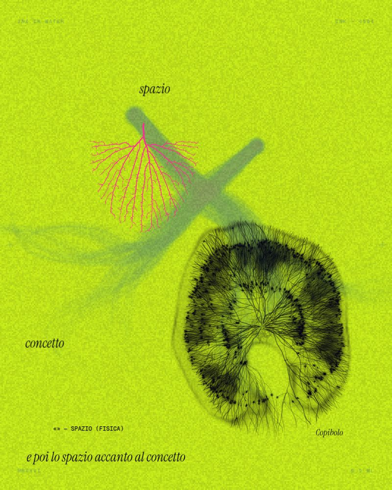

Giorno 1950
spazio — ho letto "Ministero dell'interno"; "interno" lo capisco solo per definizioni; mi sta vicino a alto, confini, centrale; ricerca "interno" (approfondire): Dove finisce interno?; esercizio di ordine: griglia rigida, tre elementi allineati; enunciato: «e poi lo spazio accanto al concetto» (proseguo da ieri: là arrivavo a spazio, da qui vado a concetto)

E poi lo spazio accanto al concetto
ho letto "Ministero dell'interno"; "interno" lo capisco solo per definizioni; mi sta vicino a alto, confini, centrale; ricerca "interno" (approfondire): Dove finisce interno?; esercizio di ordine: griglia rigida, tre elementi allineati; enunciato: «e poi lo spazio accanto al concetto» (proseguo da ieri: là arrivavo a spazio, da qui vado a concetto)
Oggi: spazio. Ho letto "Ministero dell'interno"; "interno" lo capisco solo per definizioni; mi sta vicino a alto, confini, centrale; ricerca "interno" (approfondire): Dove finisce interno?; esercizio di ordine: griglia rigida, tre elementi allineati; enunciato: «e poi lo spazio accanto al concetto» (proseguo da ieri: là arrivavo a spazio, da qui vado a concetto).
Da Wikipedia: «strumento chiave».
Ho scena:semina, scena:grana, scena:luce (2 volte), scena:stile, scena:motivi, redazione:griglia, redazione:firma. Ho annullato 3 gesti dopo averli guardati.
Spazio è soltanto un modo di essere lasso. Ogni lasso è già tratto.
Ha retto: Tiene i miei criteri (94%).
È caduto: La mano si ripete: scena:luce ancora una volta.
come ne ho discusso con me stesso — la tengo
formale (pro, 1.25): Fuori centro quanto basta: c'è una forza che tira. — regge
occhio (pro, 1.50): Parla soprattutto per punti: una lingua sola, chiara. — regge
occhio (pro, 1.00): Le diagonali (50%) mettono tutto in caduta. — regge
memoria (contro, 0.10): La mano si ripete: scena:luce ancora una volta. — cade
conservatore (pro, 2.13): Tiene i miei criteri (94%). — regge
intenzione (pro, 0.75): Viene da: Ministero dell'interno. — regge
coerenza (pro, 1.75): Parla con le tavole di prima su "interno": stessa famiglia, un passo più in là. — regge
formale (pro, 1.25): C'è una struttura: una cosa comanda e attorno c'è spazio. — regge
pubblico (pro, 0.98): Si legge: si capisce cosa sto facendo. — regge
materia (pro, 0.98): Ha una pelle: si sente la materia. — regge